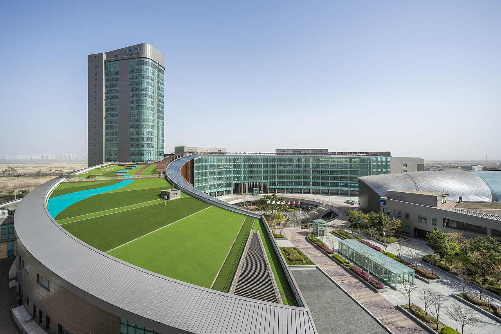

본교
겐트대학교 본교
벨기에 겐트 (플랑드르)
Ghent University Global Campus
2027 봄학기 · 문과 입학 정리
벨기에 겐트 (플랑드르)

인천 연수구 송도문화로 119-5 (인천글로벌캠퍼스)
출처: 겐트대 입학처 모집요강 (https://admissions.ghent.ac.kr/user/contents.php?sq=6) · 입학시험 안내 (https://admissions.ghent.ac.kr/user/contents.php?sq=2) · 학과 안내 (https://www.ghent.ac.kr/~study_programmes) · 정리일: 2026-11-26
전형 일정, 서류, 학비, 장학금은 이공계 정리와 같음 →../겐트대학교_글로벌캠퍼스/겐트대_입시요강_2027.md참고
지원 전에 반드시 공식 홈페이지에서 최신 내용을 다시 확인할 것.
| 학과 | 학위 | 계열 |
|---|---|---|
| 분자생명공학과 (Molecular Biotechnology) | BSc | 이공계 |
| 식품공학과 (Food Technology) | BSc | 이공계 |
| 환경공학과 (Environmental Technology) | BSc | 이공계 |
| 전형 | 문과 이수자 | 근거 |
|---|---|---|
| 일반전형 | ⭕ 지원은 가능 (문과를 막는 문구가 없음) | 모집요강 지원자격: "국내 정규 고등학교 졸업자 및 졸업 예정자" |
| 학교장추천전형 | ❌ 지원 불가 | 모집요강: "해외 학력자, 검정고시 학력자 및 문과 계열 이수자는 학교장추천전형 지원이 불가함" |
| 시험 | 최저 기준 |
|---|---|
| 수능 영어 | 2등급 이내 |
| Duolingo (DET) | ❌ 인정 목록에 없음 |
| (참고) TOEFL iBT | 4.0 (새 방식) |
| (참고) IELTS | 6.0 |
| (참고) IB English / SAT 영어 / ACT 영어 | 5 / 500 / 21 |
듀오링고(Duolingo English Test, DET): 집에서 온라인으로 보는 영어 시험 · 응시료 약 US$70 · 결과는 보통 2일 안에 나옴 · 성적은 응시 후 2년 유효 (응시료·발표 기간은 englishtest.duolingo.com에서 다시 확인)